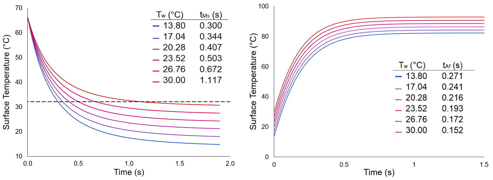

Adjustable Corrugated Interface for Buoyancy Alteration (ACIBA)
This research project was funded by the NASA Delaware Space Grant and researched the theoretical design and review of a novel unmanned underwater vehicle (UUV) design. This research was completed with advising from Professor Zubaer Hossain during the summer of 2022. The research of this project was presented in a poster session for the 2023 NASA Delaware Space Grant Research Symposium. An abstract of the project is listed below--note that due to the timeline of the project, several stages of the project have yet to be completed.
Abstract
Remotely operated underwater vehicles (ROUV's) have been in development since the mid-twentieth century, yet the overall method for buoyancy control in these vehicles has remained relatively constant. The majority of ROUV's on the market are composed of rigid bodies which greatly limits the maneuverability of these vehicles. While some ROUV's are seen to have more flexible body elements, buoyancy in almost all ROUV's is still primarily regulated by ballasts or pneumatically controlled systems which limits how often vehicles can resurface. Buoyancy, in general, is regulated by the average density of the submerged vehicle-- these ballasts act to increase the mass of the vehicle while maintaining a constant volume, but variable volume/constant mass ROUV's are rarely seen. More so, research behind changing the overall structure to an ROUV to control its buoyancy without relying on pneumatics is sparse. The purpose of this study is to explore the relationship between the neutral buoyancy state (i.e., the depth and orientation achieved while in neutral buoyancy) of an ROUV by structural deformations to the surface of the body. From this, the underwater maneuverability of this deformable membrane ROUV is explored.
A novel design is created for this volumetrically-controlled buoyancy which features a cross-section with a corrugated membrane, hereafter called the Adjustable Corrugated Interface for Buoyancy Alteration (ACIBA). The feasibility of such a device is first evaluated by finite element analysis (FEA) using a numerical model for the cross section of the vehicle. The force of the water on the ACIBA structure is modelled by a uniform pressure acting on the exterior of the vehicle. For this calculation, the surface is parameterized to calculate the vector normal to each node, modelling the near constant hydrostatic pressure the ROUV would encounter. The inside of the vehicle is modelled as air, with a very low Young's modulus and Poisson's ratio to create minimal resistance. With this, a stress map is generated for the ACIBA to determine the best material for the membrane based on the loads subjected. Theoretical calculations are performed to determine the maneuverability of this vehicle, as well as how well the material is able to handle such mechanics. Next, additive manufacturing (3-D printing) is used to create a model of this theoretical ACIBA structure. Mechanical testing is performed to validate the simulated results and pressure testing is applied to further determine the practicability of this design. Based on the theoretical and experimental tests performed in this study, an ROUV with a deformable membrane can be controlled for maneuverability as well as maintaining neutral buoyancy state solely using these volumetric changes to the body. The corrugated, sinusoidal design featured in this study (ACIBA) is capable of performing various maneuvers such as depth transfers with realistic material constraints. Developments such as this to oceanographic equipment and vehicles are becoming increasingly important to marine sciences but also see cross-applications in the field of aeronautical and aerospace engineering. Structural deformities allow the novel design to reconfigure under high pressures which can affect the drag on the surface, possessing vital applications for aeronautics and the design of aircraft.
Methods
The primary focus of the present research was to analyze whether such a corrugated design was feasible for this underwater application, meaning that several factors had to be considered:
- The shape memory alloy could realically reach the temperatures needed to enter the martensitic and austensitic phases.
- Manuevering the vehicle was possible with volumetric changes alone.
- Stresses developed on the structure could be withstood during operation.
For this, a shape memory alloy needed to be found that could transition in the range desired, and the heat transfer of this design in various water temperatures needed to be simulated. The material needed to have a high strength-to-weight ratio as weight played a crucial role in buoyant vehicles, a high ductility to perform the manueverable applications needed, high thermal stability to maintain constant depth, and corrosion resistance to survive the environment. It was determined that nickel titanium alloy (a.k.a. Nitinol) was suitable. With the application of the design having a large range in temperatures, preliminary research set an upper limit of 32.1C for the maximum fluid temperature the design would be exposed to, set at the upper limit of the NASA Neutral Buoyuancy Lab pool temperature. Based on literature analysis, 49.63 at% Nickel NiTi would be used to give a martensitic start temperature of 32.1C and an austensitic finish temperature of 66.3C.
Crude thermal simulations could then be developed to determine whether these temperatures were acheivable with the present heating and cooling methods. For this design, we consider convective-based water cooling of the design. Using the Churchill-Chu correlation, as well as several temperature dependent material properties, Euler's method can be employed to determine the temperature at the surface of the membrane over time. From this analysis, the surface should cool to the required temperature in t=1.1s based on a water temperature of as much as T=30C. A similar simulation was created based on the heating of the design, taken to be carried out purely by applying a voltage to the metallic surface. Using just a 9V voltage source with 5m-ohm added resistor, the surface should reach adequate temperatures needed for transition in just t=0.27s.
With the thermal response of the vehicle approximated for various applications, the effect on the dynamics needed to be explored. For this, Archimedes' principle was used to correlate the vertical (depth) acceleration of the vehicle with the volumetric expansion--in order to transfer between two different depths, the volume of the vehicle would then need to follow a cyclic pattern to ensure neutral buoyancy at the start and finish of the transfer. With comparing various methods of performing this maneuver, a two-term square wave approximated Fourier series was found to be the best in minimizing the needed volumetric changes while keeping a short transfer time--with a transfer height of d = 4m and a time of t = 10s, a positive acceleration change of a+ = 0.551 m/s^2 was found which is feasible.
The ability of the structure to withstand the stresses acquired during the large amplitude deformation was a critical focus of the research as this novel structure had not yet been analyzed. To do so, the structure was first parameterized as a series of points around a polar curve with parameters for the average radius, number of flutes, and amplitude of each flute. During contraction, this same structure would maintained but the average radius would decrease, the number of flutes would remain constant, and the flute amplitudes would increase in order to maintain a near constant surface area--note that the opposite process would hold for expansion of the structure. A critical calculation is then performed in order to map each point on the equilibrium or expanded state to a point on the contracted state as shown below. By assuming a uniform thickness from the neutral axis, a method was developed to perform such a calculation.
Analysis of the structure would be conducted using a quasi-static fracture model in VDef, computed through a supercomputer cluster given this complex large-scale deformation fracture analysis. With the above deformation process known, software was written to compute the deformed geometry at various timesteps of the depth transfer in order to compute the damage and stress on each model node. The VDef software allows for the stress response at each node of the ACIBA to be read, which using the parameterization found from before, allows for a stress and damage distribution to be created.
Results
The deformation structure created using the custom exodus file creation software was used to measure the stress and damage of the membrane for a single-walled and multi-layered ACIBA structure. Due to the symmetry of the design, each point on the surface of the membrane was parameterized to be at a position a percentage of the arclength of a single ACIBA flute section. This allows the results of multiple sections to be overlaid on one another and the relative position normalized.
Single-Walled Structure
As shown in the deformation results, the axial stress (S.T) peaks at the trough of the section corresponding to the high axial strain inflicted by large curvature deformation. With this, the increased curvature at the crests of the section show local peaks in axial stress as well. The asymmetric pattern of the axial stress which appears to be much larger on one part of the section than another, about 17.5% greater on average, requires further research but is likely due to the small amplitude stresses and pseudorandom mesh creation. A similar effect is seen with the shear stress with one side being 14.4% greater than the other on average. From the figure on the left it can also be seen that the majority of the stress felt on the section is caused by shear forces, about 76.5% on average. As the ACIBA is contracting, the added stress can be modelled as though the two crests were being compressed together, like the side pro le of a sinusoidal spring. It is therefore expected that as the displacement is applied, the material responds with a large amount of shear stress across the section except for the areas where tensile and compressive stress (axially) take over (e.g., the trough at the middle of the section). In the z-direction (S.B), minimal but non-negligable stress is observed due to the Poisson effect.
Multi-Layered Structure
As shown from the figures to the right, the primary contributor to damage across the ACIBA surface derives from the outtermost layer--at its greatest (at the trough, 52.31%), the outtermost layer experienced 6.10 times as much damage as the middle layer, and the internal layer saw zero damage. While the structure experiences maximum stress at this trough point, this critical point of failure occurs on the outtermost part in which the material is under compression. The banded values observed throughout the graph, especially near the trough, can be explained by the finite mesh size used to create the surface. With a layer thickness of t_layer = 1.0mm and mesh size of smesh = 0.35mm, around 2.86 meshes (and therefore band of values) are expected per layer which is observed. Refining the mesh size and computing over different input parameters would likely mitigate the asymmetrical effect observed.
Not pictured in these results is any delamination occuring between the layers. As the displacement is strictly set for each node in the model, the material conforms to the input conditions and thus is not free to seperate in this method. However, critical regions of delamination can be predicted with the damage and stresses on the material known at each position. As delamination occurs from a normal seperation between two layers of material, the normal stress component of the total stress is analyzed. Note that the tangential direction may cause slipping between layers in contact but by definition cannot cause delamination, similar applies to the binormal (or Z-component) direction. See the single-walled analysis for more information.
Discussion
To perform the Finite Element Analysis, a method of computing the displacement of a node on the surface of the ACIBA was developed. This method was able to compute these large scale deformations to a high degree of accuracy and, most importantly, could compute these values for complex geometries (uniform thickness structures) in polynomial time. Stressfields from FEA were decomposed into normal, tangent, and binormal components for an intrinsic coordinate system--such allows cartesian stresses to be converted into axial and shear stress values. With this, high shear stresses were observed near the latter region of the section, whereas high axial stresses were observed near the bottom of the trough of the section creating tensile stresses. Failure from bending can occur in these trough regions when the tension is too high, but the largest stresses were observed in the flatter regions. A multi-layered ACIBA was similarly modelled and subjected to FEA. Results show that the outtermost layer experiences a large amount of damage with significant loading, but only at the trough of the section. Subsequent layers (going from outtermost to innermost) experience less and less damage.
The proposed ACIBA structure has the above advantages and is of great importance to the National Aeronautics and Space Administration (NASA) in its fields of oceanography as well as in aeronautical and aerospace engineering. While satellite imagery is used for oceanography, the main instrument of the field is in subsea vehicles leading to the Jet Propulsion Laboratory (JPL) being among many NASA centers to study this:
- Orphaeus mission studying harsh ocean environments of the hadal zone, similar to Jupiter's moon Europa
- Buoyant Rover for Under-Ice Exploration (BRUIE) to study glaciers, oceanography, biology under antarctic ice
The study of oceanography is vital to studying extraterrestrial environments due to the similar harsh conditions and sustained remote operation. The high heave velocity proposed for the ACIBA structure allows it to be suitable for more viscous mediums and against varying gravitational effects. The control of the heave of the vehicle also allows for simulations of low-gravity and zero-gravity environments underwater. NASA currently trains for space missions, such as maintenance aboard the International Space Stations (ISS), Hubble Telescope, and upcoming (Fall 2022) Artemis missions at the Sonny Carter Training Facility in the Neutral Buoyancy Lab (NBL). The NBL features a team of divers and ROV's to operate in a 202ft x 102 ft x 40ft pool with scale replicas of the ISS and various equipment needed for training. Before beginning training, the astronauts-in-training are precisely weighed to be neutrally buoyant to simulate the zero-gravity or low-gravity (e.g. on the lunar surface) effects they will encounter. While this is the best way currently to train for these spacewalks, this training is not ideal. First, it takes a variety of man-hours for each session and spacewalks in general can be an unnecessary risk to astronauts. Second, while the astronaut's suit is weighted to be neutrally buoyant, the astronaut inside is not--this gives the same effect as a sailor walking around the inside of a submarine. Therefore, as the astronaut is training they may often get fatigued from the strain of holding the equipment and holding up their arms to operate them. Therefore, the development of underwater vehicles to help simulate space missions, or even replace manned operations, is vital.